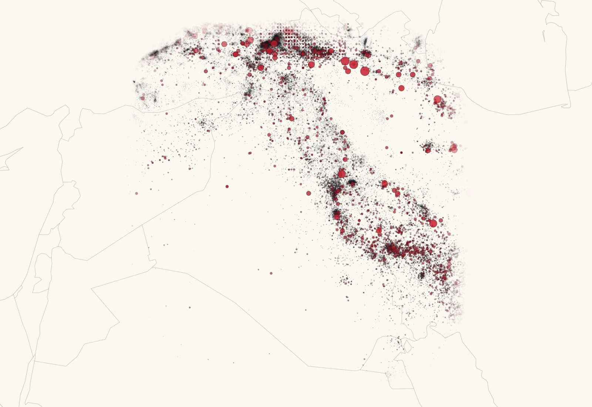
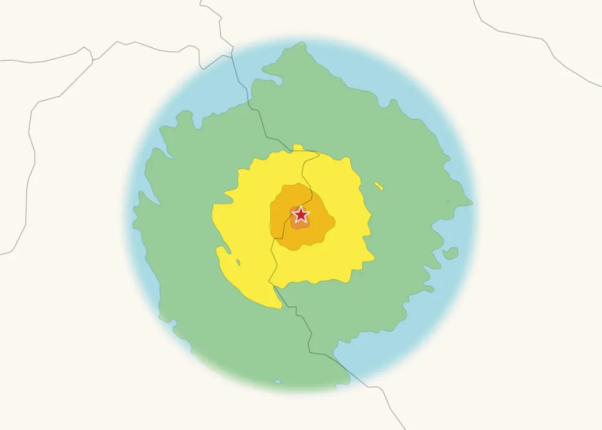
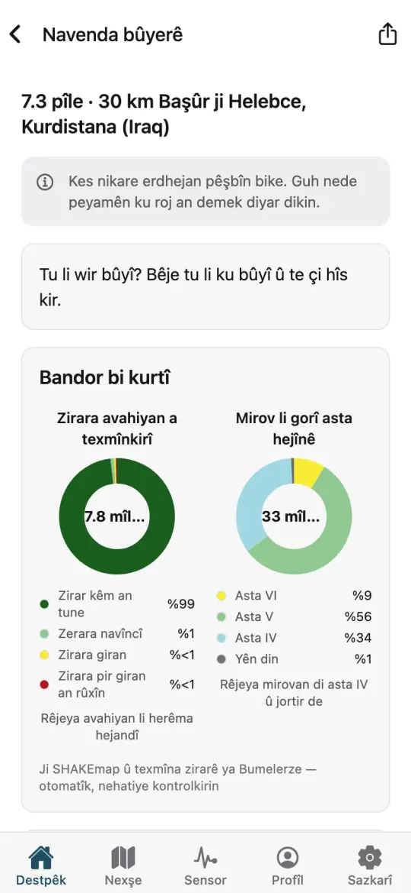
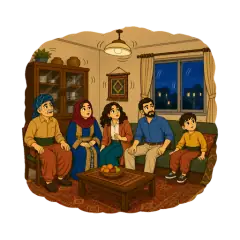
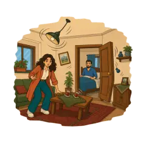
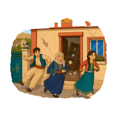

Bumelerze çawa dixebite
Bumelerze daneyên pêbawer ên erdhejê dide hev, hejînê li ser nexşeyê nîşan dide û zirara muhtemel texmîn dike. Li vir her beş çawa dixebite û sînorên wê çi ne.
- Erdhej hat tomarkirinUSGS · EMSC · GEOFON
- Yek lîsteya yekbûyî
- SHAKEmap
- Texmîna zirarê
- Raporên hîskirinê
Dane ji ku tên
Erdhejên zindî ji torên navneteweyî yên wek USGS, EMSC û GEOFON tên. Katalog 150.072 erdhejan ji sala 872an vir ve dihewîne, ji şeş katalogan: ISC, ISC-GEM, EMME, Onur 2017, KISC û USGS. Her erdhej tê yekkirin û carekê bi çavkaniyên xwe re tê nîşandan.

SHAKEmap, ji aliyê Bumelerze ve
SHAKEmap nîşan dide ku erd li her cihî çiqas bi hêz hejiyaye. Bumelerze ji bo erdhejên li Kurdistanê an yên li Iraqê hatine hîskirin SHAKEmapên xwe çêdike, ji modelên livîna erdê, stasyonên erdhejnasiyê yên nêzîk û raporên mirovan.

- IV
- V
- VI
- VII
- VIII
Texmînên zirarê ji bo Kurdistan û Iraqê
Modelên îhtîmalî hejîna li ser nexşeyê bi avahiyên Iraqê û çînên wan ên lawaziyê re dikin yek da ku zirara muhtemel a avahiyan texmîn bikin. Ev texmîn in, ne bêguman. Kurdistan û Iraqê digirin nav xwe.

Raporên te nexşeyan baştir dikin
Ji bo ku ezmûna xwe parve bikî, li wêneyê herî nêzîkî tiştê ku te hîs kir bitikîne. Hesab ne pêwîst e. Rapor li gorî herêmê wekî tundiya civakê têne komkirin, ku dibe alîkar SHAKEmap baştir bibin.
- Nehat hîskirin
- Bi zorê hat hîskirin
- Lerizîna qels

Ji aliyê gelekan ve hat hîskirin
Lerizîna xurt
Zirara sivik
Çîna avahiya xwe nas bike
«Avahiya min tomar bike» pirsên sade li ser xaniyê te dipirse. Ew cureyê avahiyê, çîneke lawaziyê ji A heta F, zirara muhtemel di hejîna xurt de û şîretên pratîk dide. Ew rêber e, ne kontrola endezyarekî ye.
- Çarçoveya betonê
- Dîwarên kerpîçê
- Dîwarên kevir
- Dîwarên gilî
Civak, heke tu bixwazî
Hesab bijarte ye. Bi hesabekî tu dikarî tevlî navendên bûyeran bibî, şîrove binivîsî û tiştê ku te hîs kir bi yên din re parve bikî. Navend û şîrove têne çavdêrîkirin. Tu dikarî her dem daneyên xwe dakêşî an hesabê xwe jê bibî.
Paşê çi tê
Hişyariyên li ser erdhejên tomarkirî di demeke nêzîk de tên. Hişyariya zû, ango hişyariyek berî ku hejîna xurt bigihîje, armanceke demdirêj e ku Bumelerze ber bi wê ve dixebite. Model niha di qonaxa ceribandinê de ne. Erdhej nayên pêşbînîkirin, û Bumelerze qet îdia nake ku wan pêşbînî dike.